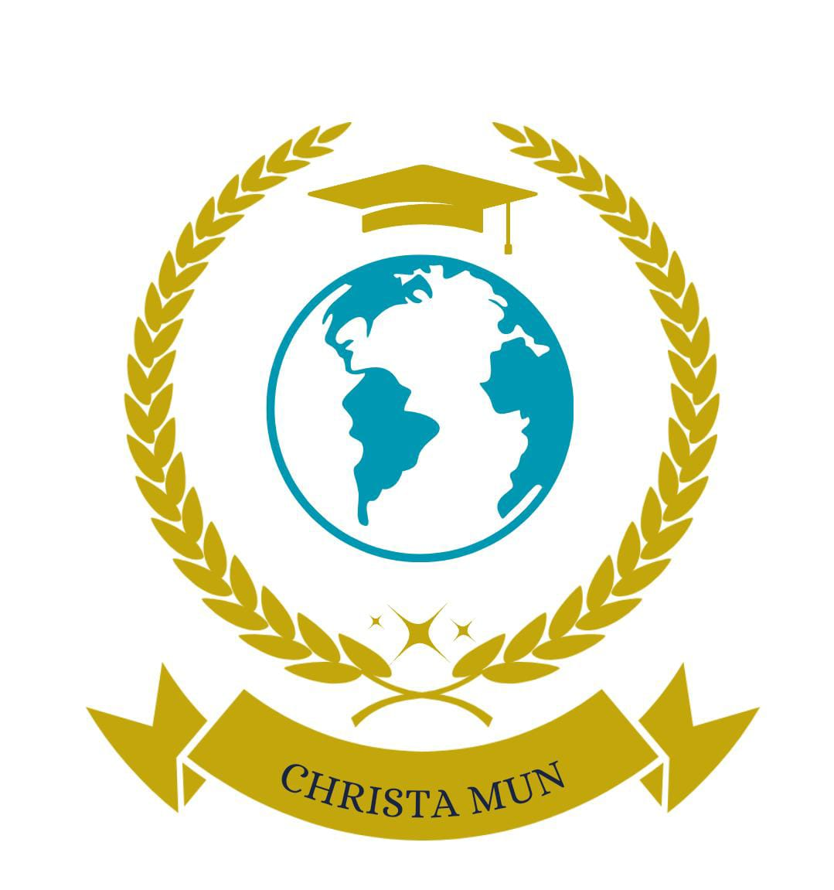

CHRISTAMUN 2024
Simulación o representación del Sistema de Naciones Unidas.

Foro 1:ONU mujeres
-Tópicos:
* Embarazo adolescente: Analizaremos las causas, consecuencias y soluciones para abordar este problema en nuestra sociedad.
* Despenalización del aborto: Debate sobre la legalización del aborto y sus implicaciones sociales y éticas.
Foro 2:UNICEF
-Tópicos:
** Contaminación del aire por quema de bosques y su impacto en la infancia: Estudiaremos cómo la contaminación afecta la salud y el desarrollo de los niños.
* Discriminación a los niños y niñas por su orientación sexual: Abordaremos la importancia de la inclusión y la igualdad en el trato hacia todos los niños.

Foro 3:Consejo de Seguridad
-Tópicos:
* Análisis de las acciones del Consejo de Seguridad de la ONU frente al conflicto entre Rusia y Ucrania: Evaluaremos las decisiones y su impacto en la paz global
* Uso del veto por parte de los miembros permanentes, como Rusia, en la toma de decisiones para la resolución de conflictos: Un análisis de la dinámica del poder en la ONU

Foro 4:Desafíos para la seguridad internacional y el sistema de la ONU en el conflicto de Rusia y Ucrania
-Tópicos:
* Fragilidad del sistema de seguridad colectiva de la ONU frente a conflictos con miembros poderosos: Examinaremos cómo la estructura actual enfrenta desafíos.
* Reformas necesarias en el sistema de la ONU para enfrentar conflictos similares en el futuro: Propuestas y soluciones para fortalecer el sistema.

Foro 5:Foro PNUMA (Programa de las Naciones Unidas para el Medio Ambiente)
-Tópicos:
* Prohibición del uso de mercurio en la minería: Se discutirá los impactos ambientales y de salud.
* Reformas necesarias en el sistema de la ONU para enfrentar conflictos similares en el futuro: Propuestas y soluciones para fortalecer el sistema.

Foro 6:OMS (Organización Mundial de la Salud)
-Tópicos:
* Infecciones de Transmisión Sexual (ITS): Analizaremos la prevención y educación en torno
* Programa de VIH: Estrategias y retos en la lucha contra el VIH/SIDA.
Foro 7:PMA (Programa Mundial de Alimentos)
-Tópicos:
* Sobrepeso en niños y adolescentes: Causas y estrategias para su prevención.
* Desnutrición en niños y adolescentes: Un enfoque en la importancia de una nutrición adecuada y el acceso a alimentos saludables.
Foro 8:Comisión de Derechos Humanos
-Tópicos:
* Derecho a la privacidad en la era digital: Desafíos que enfrentan los gobiernos y organizaciones internacionales para proteger la privacidad de los individuos en un mundo cada vez más interconectado
* Refugiados y migración forzada: La responsabilidad internacional ante la crisis migratoria